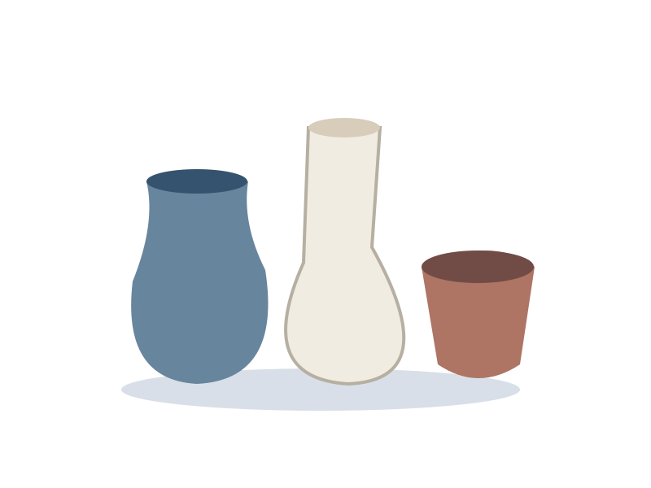

Made slowly. Used daily.
A study of useful ceramic forms: the small bowl, the generous cup and the vase that leaves room for a branch. Explore proportion before decoration.
The surface tells a story.
Glazes gather at an edge, a thumb leaves a rhythm and a foot ring gives a vessel its lift. This notebook focuses on shape, care and the practical choices behind everyday ware.
Read the form notes